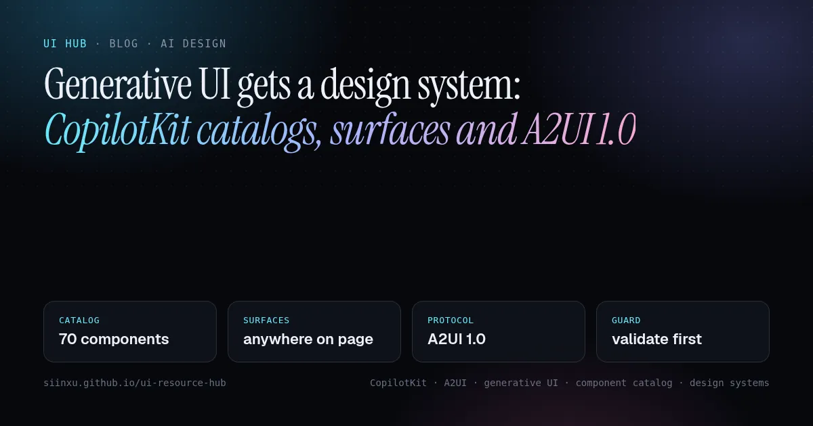
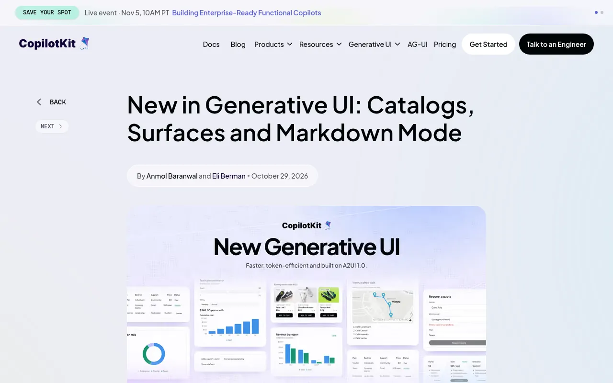
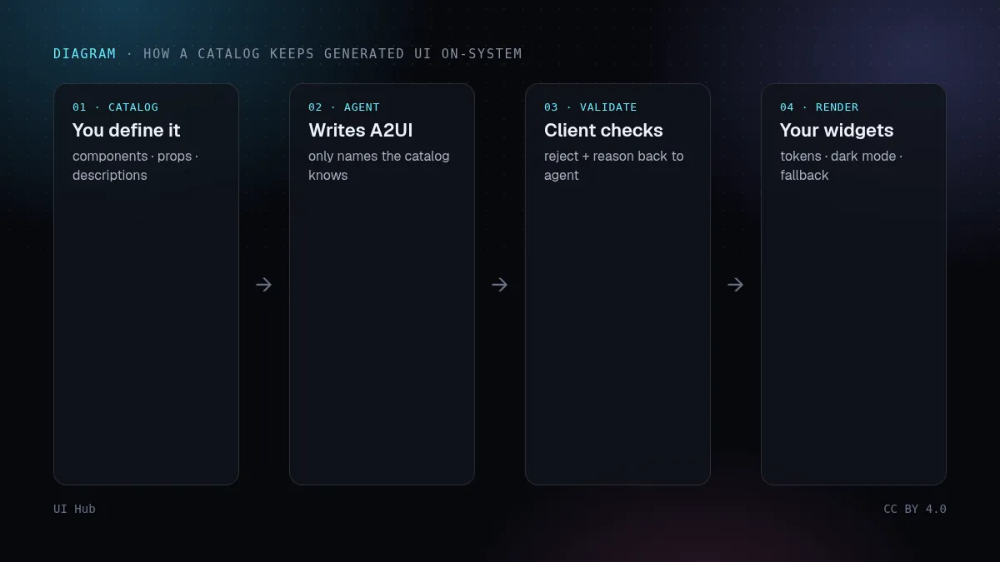
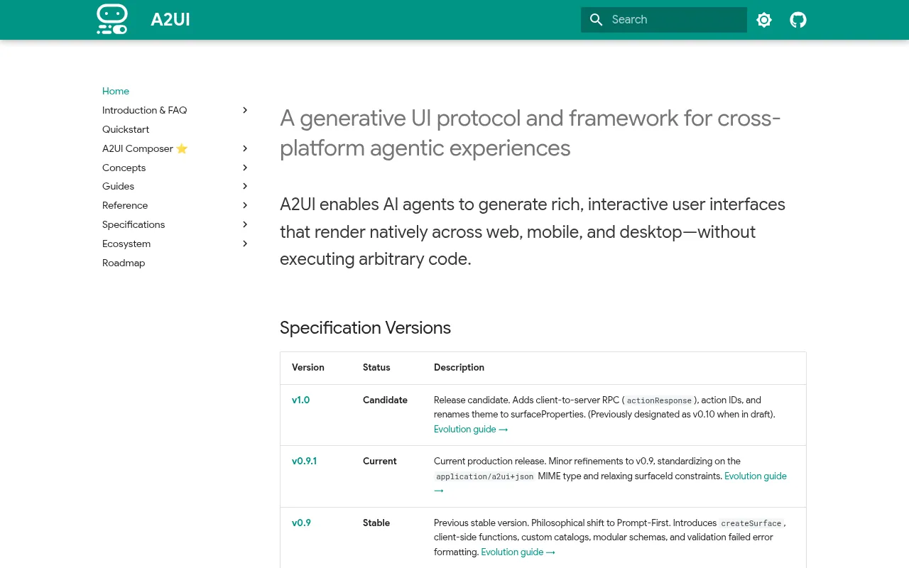

Generative UI gets a design system: CopilotKit catalogs, surfaces and A2UI 1.0生成UIにデザインシステムが入る：CopilotKitのカタログ、サーフェス、A2UI 1.0생성형 UI에 디자인 시스템이 들어오다: CopilotKit 카탈로그, 서피스, A2UI 1.0UI generatif kini ada sistem reka bentuk: katalog, permukaan CopilotKit dan A2UI 1.0Generative UI có hệ thống thiết kế: catalog, surface của CopilotKit và A2UI 1.0L’UI générative a enfin un design system : catalogues, surfaces CopilotKit et A2UI 1.0La UI generativa ya tiene sistema de diseño: catálogos, superficies de CopilotKit y A2UI 1.0Generative UI bekommt ein Designsystem: CopilotKit-Kataloge, Surfaces und A2UI 1.0
On 29 October CopilotKit shipped a 70-component catalog, page “surfaces” and a markdown mode for generative UI, all on Google’s A2UI 1.0 protocol; two days earlier Google added A2UI Express, a compact format that cuts tokens up to 3×. The shift for designers: when an agent builds screens, the component catalog becomes the design system’s contract. What changed, what it means for UI teams, and a checklist for a catalog agents can’t break.10月29日、CopilotKitは生成UI向けに70コンポーネントの標準カタログ、ページ上の「サーフェス」、マークダウンモードを公開した。いずれもGoogleのA2UI 1.0プロトコル上に構築されている。その2日前、Googleはトークンを最大3分の1にするコンパクト形式A2UI Expressを追加した。デザイナーにとっての変化は、エージェントが画面を組むとき、コンポーネントカタログがデザインシステムの契約になることだ。何が変わったか、UIチームへの意味、エージェントに壊されないカタログのチェックリスト。10월 29일 CopilotKit는 생성형 UI용 70개 컴포넌트 표준 카탈로그, 페이지 위의 ‘서피스’, 마크다운 모드를 내놓았다. 모두 Google의 A2UI 1.0 프로토콜 위에 만들어졌다. 이틀 전 Google은 토큰을 최대 3배 줄이는 간결한 형식 A2UI Express를 추가했다. 디자이너에게 달라지는 점은, 에이전트가 화면을 만들 때 컴포넌트 카탈로그가 디자인 시스템의 계약이 된다는 것이다. 무엇이 바뀌었는지, UI 팀에 주는 의미, 에이전트가 깨뜨릴 수 없는 카탈로그 체크리스트.Pada 29 Oktober CopilotKit melancarkan katalog 70 komponen, “permukaan” halaman dan mod markdown untuk UI generatif, semuanya di atas protokol A2UI 1.0 Google; dua hari sebelumnya Google menambah A2UI Express, format padat yang mengurangkan token sehingga 3×. Perubahan bagi pereka: apabila ejen membina skrin, katalog komponen menjadi kontrak sistem reka bentuk. Apa yang berubah, maksudnya bagi pasukan UI, dan senarai semak untuk katalog yang tidak boleh dirosakkan ejen.Ngày 29/10, CopilotKit ra mắt catalog 70 component, “surface” trên trang và chế độ markdown cho generative UI, tất cả dựa trên giao thức A2UI 1.0 của Google; hai ngày trước, Google thêm A2UI Express, định dạng gọn giúp giảm token tới 3 lần. Thay đổi với designer: khi agent dựng màn hình, catalog component trở thành hợp đồng của hệ thống thiết kế. Điều gì thay đổi, ý nghĩa với đội UI, và checklist cho một catalog mà agent không thể phá.Le 29 octobre, CopilotKit a publié un catalogue de 70 composants, des « surfaces » de page et un mode markdown pour l’UI générative, le tout sur le protocole A2UI 1.0 de Google ; deux jours plus tôt, Google ajoutait A2UI Express, un format compact qui divise les tokens jusqu’à 3. Le changement pour les designers : quand un agent construit les écrans, le catalogue de composants devient le contrat du design system. Ce qui change, ce que cela implique pour les équipes UI, et une checklist pour un catalogue que l’agent ne peut pas casser.El 29 de octubre CopilotKit lanzó un catálogo de 70 componentes, “superficies” en la página y un modo markdown para UI generativa, todo sobre el protocolo A2UI 1.0 de Google; dos días antes Google añadió A2UI Express, un formato compacto que reduce los tokens hasta 3×. El cambio para diseñadores: cuando un agente construye pantallas, el catálogo de componentes se convierte en el contrato del sistema de diseño. Qué cambió, qué significa para los equipos de UI y una checklist para un catálogo que el agente no pueda romper.Am 29. Oktober hat CopilotKit einen Katalog mit 70 Komponenten, Seiten-„Surfaces“ und einen Markdown-Modus für Generative UI veröffentlicht, alles auf Googles A2UI-1.0-Protokoll; zwei Tage zuvor brachte Google A2UI Express, ein kompaktes Format mit bis zu 3× weniger Tokens. Der Wandel für Designer: Wenn ein Agent Screens baut, wird der Komponentenkatalog zum Vertrag des Designsystems. Was sich geändert hat, was es für UI-Teams bedeutet und eine Checkliste für einen Katalog, den der Agent nicht kaputt machen kann.

本文は英語で表示しています。
본문은 영어로 표시됩니다.
Kandungan dipaparkan dalam bahasa Inggeris.
Nội dung hiển thị bằng tiếng Anh.
Le corps de l’article est en anglais.
El cuerpo del artículo está en inglés.
Der Beitragstext ist auf Englisch.
For two years “generative UI” mostly meant a chatbot that sometimes drew a chart inside its bubble. This week it grew up. On 29 October CopilotKit released a large upgrade to its generative UI layer: a standard catalog of 70 components, surfaces that let an agent render into named areas of your actual page, and a markdown mode where text and components stream in the same answer. Underneath sits A2UI, the open protocol Google started (with CopilotKit and others contributing), whose 1.0 spec is now a release candidate. Two days earlier Google’s A2UI team shipped a faster way for models to write it. Read together, these releases move an important decision from engineers to design-system owners: which components an agent may use, where, and with what props.

What shipped this week
- A standard catalog of 70 components. Layout, text, form inputs, tables, images, video, charts (built on Recharts) and maps (built on MapLibre), plus ready-made blocks such as link previews, citations, product cards and follow-up suggestions. CopilotKit says 18 of them are A2UI’s basic components and 52 are its own.
- Your components, typed. You register your own with
createGenerativeUI: each entry has a description the agent reads to decide when to use it, and a props schema (Zod, Valibot or ArkType). Three switches decide how your catalog sits next to the standard one:extendskeeps both,omitremoves components so the agent never sees them, andoverridesreplaces a standard component with yours. - Surfaces outside the chat. Wrap any area in
GenerativeUISurfacewith an id, a plain-language description of what belongs there, a list of allowed components and a fallback (your normal hand-built UI). The agent only sees a target while it is on screen; anything outside the allowed list is rejected and the agent is told why. - Two streaming modes. Tool mode (the default) sends UI through a tool call and renders it piece by piece; markdown mode lets the agent write UI straight into its reply. Sliders, live values and form checks run in the browser, so interacting with generated UI costs no extra tokens.
- Guardrails and debugging. Every piece is checked against the catalog before it renders, generated UI never executes code on your page, each component gets its own error boundary, and a new Inspector pane shows what rendered, what was rejected and the exact prompt the model saw. CopilotKit labels all of this experimental until A2UI 1.0 is final.

Why A2UI matters to designers
A2UI’s core idea is simple: an agent does not send HTML or code, it sends a declarative description of components from a catalog the client has approved, and the client renders them with its own native widgets (renderers exist for Angular, Flutter, Lit, React and markdown). That makes the catalog the only vocabulary the agent has. On 27 October Google added swappable “inference formats”: the model can write A2UI Express, a compact line-by-line syntax that the SDK compiles into standard A2UI messages. Google reports up to 3× fewer tokens and up to 3× lower latency than writing the JSON directly, and much bigger speed-ups when a small decision model only picks between layouts you designed in advance. The detail that matters for design quality: both the prompt and the compiler are generated from your catalog schema, so a format cannot describe a component or property your catalog does not have. On 30 October the project also published its first CLI, which generates typed builders from catalog schemas.
Our take
This is the right shape for agent-built interfaces, and it changes who owns the result. When an agent can only compose from a typed catalog, “on-brand” stops being a hope you put in a prompt and becomes a property of the system: the agent literally cannot emit a neon gradient button if no such variant exists. The flip side is that every weakness in the catalog becomes visible. A vague description (“a card”) makes the agent pick it for everything; a free-text variant prop invites invented styles; a surface without a good fallback leaves a hole when the model is slow or wrong. So the craft moves upstream: designers should write component descriptions like usage guidelines, keep prop types narrow, and design the empty, streaming and error states of every surface, because those are now part of the product. Two caveats: the CopilotKit API is explicitly experimental, and the speed numbers are vendor-reported best cases, so pin versions and measure on your own screens.
Checklist: a catalog an agent can’t break
- Start narrow. Give each surface only the components it needs (
componentsoromit); a product row should accept product cards, not sliders. Smaller lists also mean smaller prompts. - Override the basics. Replace the standard Button, Card and Input with your own so tokens, radii and focus styles come from your system, not the library default.
- Write descriptions as rules. Say when to use a component, when not to, and what to use instead. The agent reads these on every run.
- Type props tightly. Enums for variants and tones, numbers for numbers, length limits for labels. Free strings are where invented styles come from.
- Design the fallback first. Every surface should render your real hand-designed UI until the agent takes over, and again after it lets go.
- Design the in-between states. Streaming skeletons, a per-component error fallback, and what the area looks like when the agent removes its surface.
- Keep user input sacred. Values the user typed should never be overwritten by the agent; check that your setup enforces it.
- Theme with tokens and test dark mode. Generated screens should pass the same contrast checks (4.5:1 for body text) as hand-built ones.
- Read the rejections. Review what the Inspector rejected each week: a repeated rejection means a missing component or a misleading description, not a bad model.
- Match the mode to the screen. Fixed layouts are faster as predefined templates chosen by the agent; reserve free composition for screens that really vary.
StatCard
use when: the user asks about one metric over a period
not for: more than 4 numbers (use Table) · trends (use LineChart)
props: label: string ≤ 24 · value: number · delta: number
tone: "up" | "down" | "flat"
tokens: surface/raised · text/muted · accent only when tone = "up"
How UI Hub helps
A good catalog starts from named values: design tokens for agents covers writing them down, and linting agents onto your design system covers catching one-off values afterwards. For the chat side of agent interfaces (steps, tool calls, code output), see shadcn Trace and AI Elements; for approval and interruption patterns when an agent acts on a page, see agent approval UI. The component pages on UI Hub are a useful shopping list when you decide what belongs in your catalog.
For two years “generative UI” mostly meant a chatbot that sometimes drew a chart inside its bubble. This week it grew up. On 29 October CopilotKit released a large upgrade to its generative UI layer: a standard catalog of 70 components, surfaces that let an agent render into named areas of your actual page, and a markdown mode where text and components stream in the same answer. Underneath sits A2UI, the open protocol Google started (with CopilotKit and others contributing), whose 1.0 spec is now a release candidate. Two days earlier Google’s A2UI team shipped a faster way for models to write it. Read together, these releases move an important decision from engineers to design-system owners: which components an agent may use, where, and with what props.
What shipped this week
- A standard catalog of 70 components. Layout, text, form inputs, tables, images, video, charts (built on Recharts) and maps (built on MapLibre), plus ready-made blocks such as link previews, citations, product cards and follow-up suggestions. CopilotKit says 18 of them are A2UI’s basic components and 52 are its own.
- Your components, typed. You register your own with
createGenerativeUI: each entry has a description the agent reads to decide when to use it, and a props schema (Zod, Valibot or ArkType). Three switches decide how your catalog sits next to the standard one:extendskeeps both,omitremoves components so the agent never sees them, andoverridesreplaces a standard component with yours. - Surfaces outside the chat. Wrap any area in
GenerativeUISurfacewith an id, a plain-language description of what belongs there, a list of allowed components and a fallback (your normal hand-built UI). The agent only sees a target while it is on screen; anything outside the allowed list is rejected and the agent is told why. - Two streaming modes. Tool mode (the default) sends UI through a tool call and renders it piece by piece; markdown mode lets the agent write UI straight into its reply. Sliders, live values and form checks run in the browser, so interacting with generated UI costs no extra tokens.
- Guardrails and debugging. Every piece is checked against the catalog before it renders, generated UI never executes code on your page, each component gets its own error boundary, and a new Inspector pane shows what rendered, what was rejected and the exact prompt the model saw. CopilotKit labels all of this experimental until A2UI 1.0 is final.
Why A2UI matters to designers
A2UI’s core idea is simple: an agent does not send HTML or code, it sends a declarative description of components from a catalog the client has approved, and the client renders them with its own native widgets (renderers exist for Angular, Flutter, Lit, React and markdown). That makes the catalog the only vocabulary the agent has. On 27 October Google added swappable “inference formats”: the model can write A2UI Express, a compact line-by-line syntax that the SDK compiles into standard A2UI messages. Google reports up to 3× fewer tokens and up to 3× lower latency than writing the JSON directly, and much bigger speed-ups when a small decision model only picks between layouts you designed in advance. The detail that matters for design quality: both the prompt and the compiler are generated from your catalog schema, so a format cannot describe a component or property your catalog does not have. On 30 October the project also published its first CLI, which generates typed builders from catalog schemas.
Our take
This is the right shape for agent-built interfaces, and it changes who owns the result. When an agent can only compose from a typed catalog, “on-brand” stops being a hope you put in a prompt and becomes a property of the system: the agent literally cannot emit a neon gradient button if no such variant exists. The flip side is that every weakness in the catalog becomes visible. A vague description (“a card”) makes the agent pick it for everything; a free-text variant prop invites invented styles; a surface without a good fallback leaves a hole when the model is slow or wrong. So the craft moves upstream: designers should write component descriptions like usage guidelines, keep prop types narrow, and design the empty, streaming and error states of every surface, because those are now part of the product. Two caveats: the CopilotKit API is explicitly experimental, and the speed numbers are vendor-reported best cases, so pin versions and measure on your own screens.
Checklist: a catalog an agent can’t break
- Start narrow. Give each surface only the components it needs (
componentsoromit); a product row should accept product cards, not sliders. Smaller lists also mean smaller prompts. - Override the basics. Replace the standard Button, Card and Input with your own so tokens, radii and focus styles come from your system, not the library default.
- Write descriptions as rules. Say when to use a component, when not to, and what to use instead. The agent reads these on every run.
- Type props tightly. Enums for variants and tones, numbers for numbers, length limits for labels. Free strings are where invented styles come from.
- Design the fallback first. Every surface should render your real hand-designed UI until the agent takes over, and again after it lets go.
- Design the in-between states. Streaming skeletons, a per-component error fallback, and what the area looks like when the agent removes its surface.
- Keep user input sacred. Values the user typed should never be overwritten by the agent; check that your setup enforces it.
- Theme with tokens and test dark mode. Generated screens should pass the same contrast checks (4.5:1 for body text) as hand-built ones.
- Read the rejections. Review what the Inspector rejected each week: a repeated rejection means a missing component or a misleading description, not a bad model.
- Match the mode to the screen. Fixed layouts are faster as predefined templates chosen by the agent; reserve free composition for screens that really vary.
StatCard
use when: the user asks about one metric over a period
not for: more than 4 numbers (use Table) · trends (use LineChart)
props: label: string ≤ 24 · value: number · delta: number
tone: "up" | "down" | "flat"
tokens: surface/raised · text/muted · accent only when tone = "up"How UI Hub helps
A good catalog starts from named values: design tokens for agents covers writing them down, and linting agents onto your design system covers catching one-off values afterwards. For the chat side of agent interfaces (steps, tool calls, code output), see shadcn Trace and AI Elements; for approval and interruption patterns when an agent acts on a page, see agent approval UI. The component pages on UI Hub are a useful shopping list when you decide what belongs in your catalog.
AI promptAIプロンプトAI 프롬프트Prompt AIPrompt cho AIPrompt IAPrompt de IAKI-Prompt
Paste this into Claude, Cursor, v0 or another assistant to apply this post to your own project. Replace the parts in angle brackets.Claude・Cursor・v0 などのAIアシスタントに貼り付けると、この記事の方法をあなたのプロジェクトに適用できます。山括弧の部分は自分の内容に置き換えてください。Claude, Cursor, v0 같은 AI 도우미에 붙여 넣으면 이 글의 방법을 내 프로젝트에 적용할 수 있습니다. 꺾쇠괄호 안은 내 내용으로 바꾸세요.Tampal ke Claude, Cursor, v0 atau pembantu lain untuk menggunakan kaedah artikel ini pada projek anda. Gantikan bahagian dalam kurungan sudut.Dán vào Claude, Cursor, v0 hoặc trợ lý khác để áp dụng bài này cho dự án của bạn. Thay phần trong dấu ngoặc nhọn bằng nội dung của bạn.Collez-le dans Claude, Cursor, v0 ou un autre assistant pour appliquer cet article à votre projet. Remplacez les parties entre chevrons.Pégalo en Claude, Cursor, v0 u otro asistente para aplicar este artículo a tu proyecto. Sustituye lo que está entre corchetes angulares.In Claude, Cursor, v0 oder einen anderen Assistenten einfügen, um diesen Beitrag auf dein Projekt anzuwenden. Teile in spitzen Klammern ersetzen.
You are a senior UI engineer. Apply the article “Generative UI gets a design system: CopilotKit catalogs, surfaces and A2UI 1.0” (https://ui.incidental.site/blog/generative-ui-catalogs-surfaces-a2ui/) to my project.
Key idea: On 29 October CopilotKit shipped a 70-component catalog, page “surfaces” and a markdown mode for generative UI, all on Google’s A2UI 1.0 protocol; two days earlier Google added A2UI Express, a compact format that cuts tokens up to 3×. The shift for designers: when an agent builds screens, the component catalog becomes the design system’s contract. What changed, what it means for UI teams, and a checklist for a catalog agents can’t break.
Steps:
1. Read the article and turn its advice into a numbered checklist of concrete, checkable rules.
2. Audit <my page / component / repo> against that checklist; mark each rule PASS or FAIL with file and line.
3. Fix the FAIL items in small batches, using my existing tokens and components. Do not invent APIs; follow the official docs the article links to.
4. Finish with a short list of open questions and anything you could not verify.あなたはシニアUIエンジニアです。記事「生成UIにデザインシステムが入る：CopilotKitのカタログ、サーフェス、A2UI 1.0」（https://ui.incidental.site/blog/generative-ui-catalogs-surfaces-a2ui/）の方法を私のプロジェクトに適用してください。
要点：10月29日、CopilotKitは生成UI向けに70コンポーネントの標準カタログ、ページ上の「サーフェス」、マークダウンモードを公開した。いずれもGoogleのA2UI 1.0プロトコル上に構築されている。その2日前、Googleはトークンを最大3分の1にするコンパクト形式A2UI Expressを追加した。デザイナーにとっての変化は、エージェントが画面を組むとき、コンポーネントカタログがデザインシステムの契約になることだ。何が変わったか、UIチームへの意味、エージェントに壊されないカタログのチェックリスト。
手順：
1. 記事を読み、助言を具体的で確認可能な番号付きチェックリストにする。
2. そのチェックリストで <私のページ / コンポーネント / リポジトリ> を監査し、各項目を合格／不合格で示し、ファイルと行番号を書く。
3. 不合格の項目を、既存のトークンとコンポーネントを使って少しずつ修正する。APIを捏造せず、記事がリンクする公式ドキュメントに従う。
4. 最後に未解決の質問と検証できなかった点を挙げる。당신은 시니어 UI 엔지니어입니다. 글 “생성형 UI에 디자인 시스템이 들어오다: CopilotKit 카탈로그, 서피스, A2UI 1.0”(https://ui.incidental.site/blog/generative-ui-catalogs-surfaces-a2ui/)의 방법을 내 프로젝트에 적용해 주세요.
핵심: 10월 29일 CopilotKit는 생성형 UI용 70개 컴포넌트 표준 카탈로그, 페이지 위의 ‘서피스’, 마크다운 모드를 내놓았다. 모두 Google의 A2UI 1.0 프로토콜 위에 만들어졌다. 이틀 전 Google은 토큰을 최대 3배 줄이는 간결한 형식 A2UI Express를 추가했다. 디자이너에게 달라지는 점은, 에이전트가 화면을 만들 때 컴포넌트 카탈로그가 디자인 시스템의 계약이 된다는 것이다. 무엇이 바뀌었는지, UI 팀에 주는 의미, 에이전트가 깨뜨릴 수 없는 카탈로그 체크리스트.
단계:
1. 글을 읽고 조언을 구체적이고 확인 가능한 번호 목록으로 정리한다.
2. 그 목록으로 <내 페이지 / 컴포넌트 / 저장소>를 점검하고, 항목마다 통과/실패와 파일·줄 번호를 적는다.
3. 실패 항목을 기존 토큰과 컴포넌트로 조금씩 고친다. API를 지어내지 말고 글에 링크된 공식 문서를 따른다.
4. 마지막으로 남은 질문과 확인하지 못한 내용을 정리한다.Anda jurutera UI kanan. Gunakan kaedah artikel “UI generatif kini ada sistem reka bentuk: katalog, permukaan CopilotKit dan A2UI 1.0” (https://ui.incidental.site/blog/generative-ui-catalogs-surfaces-a2ui/) pada projek saya.
Idea utama: Pada 29 Oktober CopilotKit melancarkan katalog 70 komponen, “permukaan” halaman dan mod markdown untuk UI generatif, semuanya di atas protokol A2UI 1.0 Google; dua hari sebelumnya Google menambah A2UI Express, format padat yang mengurangkan token sehingga 3×. Perubahan bagi pereka: apabila ejen membina skrin, katalog komponen menjadi kontrak sistem reka bentuk. Apa yang berubah, maksudnya bagi pasukan UI, dan senarai semak untuk katalog yang tidak boleh dirosakkan ejen.
Langkah:
1. Baca artikel dan jadikan nasihatnya senarai semak bernombor yang konkrit dan boleh disemak.
2. Audit <halaman / komponen / repo saya> dengan senarai itu; tandakan setiap peraturan LULUS atau GAGAL dengan fail dan baris.
3. Baiki item GAGAL sedikit demi sedikit menggunakan token dan komponen sedia ada. Jangan reka API; ikut dokumen rasmi yang dipautkan artikel.
4. Akhiri dengan soalan terbuka dan perkara yang tidak dapat disahkan.Bạn là kỹ sư UI cấp cao. Hãy áp dụng bài viết “Generative UI có hệ thống thiết kế: catalog, surface của CopilotKit và A2UI 1.0” (https://ui.incidental.site/blog/generative-ui-catalogs-surfaces-a2ui/) cho dự án của tôi.
Ý chính: Ngày 29/10, CopilotKit ra mắt catalog 70 component, “surface” trên trang và chế độ markdown cho generative UI, tất cả dựa trên giao thức A2UI 1.0 của Google; hai ngày trước, Google thêm A2UI Express, định dạng gọn giúp giảm token tới 3 lần. Thay đổi với designer: khi agent dựng màn hình, catalog component trở thành hợp đồng của hệ thống thiết kế. Điều gì thay đổi, ý nghĩa với đội UI, và checklist cho một catalog mà agent không thể phá.
Các bước:
1. Đọc bài và biến lời khuyên thành danh sách kiểm tra đánh số, cụ thể, kiểm chứng được.
2. Rà soát <trang / component / repo của tôi> theo danh sách đó; ghi ĐẠT hoặc KHÔNG ĐẠT kèm tệp và dòng.
3. Sửa các mục KHÔNG ĐẠT theo từng đợt nhỏ, dùng token và component sẵn có. Không bịa API; làm theo tài liệu chính thức mà bài viết dẫn tới.
4. Kết thúc bằng các câu hỏi còn mở và những điểm chưa xác minh được.Tu es ingénieur UI senior. Applique l’article « L’UI générative a enfin un design system : catalogues, surfaces CopilotKit et A2UI 1.0 » (https://ui.incidental.site/blog/generative-ui-catalogs-surfaces-a2ui/) à mon projet.
Idée clé : Le 29 octobre, CopilotKit a publié un catalogue de 70 composants, des « surfaces » de page et un mode markdown pour l’UI générative, le tout sur le protocole A2UI 1.0 de Google ; deux jours plus tôt, Google ajoutait A2UI Express, un format compact qui divise les tokens jusqu’à 3. Le changement pour les designers : quand un agent construit les écrans, le catalogue de composants devient le contrat du design system. Ce qui change, ce que cela implique pour les équipes UI, et une checklist pour un catalogue que l’agent ne peut pas casser.
Étapes :
1. Lis l’article et transforme ses conseils en une liste numérotée de règles concrètes et vérifiables.
2. Audite <ma page / mon composant / mon dépôt> avec cette liste ; indique OK ou KO pour chaque règle, avec fichier et ligne.
3. Corrige les points KO par petits lots, avec mes tokens et composants existants. N’invente pas d’API ; suis la documentation officielle citée par l’article.
4. Termine par les questions ouvertes et ce que tu n’as pas pu vérifier.Eres un ingeniero de UI sénior. Aplica el artículo “La UI generativa ya tiene sistema de diseño: catálogos, superficies de CopilotKit y A2UI 1.0” (https://ui.incidental.site/blog/generative-ui-catalogs-surfaces-a2ui/) a mi proyecto.
Idea clave: El 29 de octubre CopilotKit lanzó un catálogo de 70 componentes, “superficies” en la página y un modo markdown para UI generativa, todo sobre el protocolo A2UI 1.0 de Google; dos días antes Google añadió A2UI Express, un formato compacto que reduce los tokens hasta 3×. El cambio para diseñadores: cuando un agente construye pantallas, el catálogo de componentes se convierte en el contrato del sistema de diseño. Qué cambió, qué significa para los equipos de UI y una checklist para un catálogo que el agente no pueda romper.
Pasos:
1. Lee el artículo y convierte sus consejos en una lista numerada de reglas concretas y comprobables.
2. Audita <mi página / componente / repositorio> con esa lista; marca cada regla como CUMPLE o NO CUMPLE con archivo y línea.
3. Corrige los puntos que no cumplen en lotes pequeños, usando mis tokens y componentes actuales. No inventes APIs; sigue la documentación oficial que enlaza el artículo.
4. Termina con las preguntas abiertas y lo que no pudiste verificar.Du bist Senior-UI-Engineer. Wende den Artikel „Generative UI bekommt ein Designsystem: CopilotKit-Kataloge, Surfaces und A2UI 1.0“ (https://ui.incidental.site/blog/generative-ui-catalogs-surfaces-a2ui/) auf mein Projekt an.
Kernidee: Am 29. Oktober hat CopilotKit einen Katalog mit 70 Komponenten, Seiten-„Surfaces“ und einen Markdown-Modus für Generative UI veröffentlicht, alles auf Googles A2UI-1.0-Protokoll; zwei Tage zuvor brachte Google A2UI Express, ein kompaktes Format mit bis zu 3× weniger Tokens. Der Wandel für Designer: Wenn ein Agent Screens baut, wird der Komponentenkatalog zum Vertrag des Designsystems. Was sich geändert hat, was es für UI-Teams bedeutet und eine Checkliste für einen Katalog, den der Agent nicht kaputt machen kann.
Schritte:
1. Lies den Artikel und mach aus den Empfehlungen eine nummerierte Liste konkreter, prüfbarer Regeln.
2. Prüfe <meine Seite / Komponente / mein Repo> anhand dieser Liste; markiere jede Regel mit OK oder FEHLT, mit Datei und Zeile.
3. Behebe die fehlenden Punkte in kleinen Schritten mit meinen vorhandenen Tokens und Komponenten. Erfinde keine APIs; folge der offiziellen Doku, die der Artikel verlinkt.
4. Schließe mit offenen Fragen und dem, was du nicht prüfen konntest.References参考文献참고 자료RujukanNguồn tham khảoRéférencesReferenciasQuellen
- New in Generative UI: Catalogs, Surfaces and Markdown Mode — Anmol Baranwal and Eli Berman, CopilotKit Blog
- Surfaces — CopilotKit Docs
- Catalogs — CopilotKit Docs
- Standard catalog — CopilotKit Docs
- Generative UI shop example — CopilotKit, GitHub
- A2UI: a generative UI protocol for cross-platform agentic experiences — A2UI project
- Fast, reliable A2UI, with swappable inference formats — Vishal Motwani, Google Developers Blog
- A2UI Express technical specification — A2UI project
- A2UI CLI v0.1.0 release — a2ui-project, GitHub
- Generative UI timeline — AG-UI.AI
Related posts関連記事관련 글Artikel berkaitanBài liên quanArticles liésArtículos relacionadosÄhnliche Beiträge

Lint the agent: keeping AI-written UI on your design systemエージェントにLintを：AIが書くUIをデザインシステムに留める에이전트에 린트를: AI가 쓴 UI를 디자인 시스템 안에 묶어 두기Lint untuk ejen: memastikan UI tulisan AI kekal dalam sistem reka bentuk andaLint cho agent: giữ UI do AI viết bám đúng design systemLinter l’agent : garder l’UI écrite par l’IA dans votre design systemLintear al agente: mantener la UI escrita por IA dentro de tu design systemDen Agenten linten: KI-geschriebene UI im eigenen Design-System halten
On 22 October the open-source onsystem went public, joining shadcn’s agent-first linter and Figma’s new Guidelines and system check. The shared idea: stop asking agents to follow your design system and start checking every edit. What the benchmark shows, and a setup checklist.10月22日、オープンソースのonsystemが公開され、shadcnのエージェント向けリンターやFigmaの新しいGuidelines・システムチェックに加わった。共通の考え方は、デザインシステムを守るよう頼むのではなく、すべての編集を検査すること。ベンチマークの読み方と導入チェックリスト。10월 22일 오픈소스 onsystem이 공개되며 shadcn의 에이전트용 린터, Figma의 새 Guidelines·시스템 체크와 나란히 섰다. 공통된 생각은 디자인 시스템을 지켜 달라고 부탁하지 말고 모든 편집을 검사하라는 것. 벤치마크가 말하는 것과 설정 체크리스트.Pada 22 Okt, onsystem sumber terbuka dilancarkan, menyertai linter shadcn untuk ejen serta Guidelines dan semakan sistem baharu Figma. Idea yang sama: berhenti meminta ejen mematuhi sistem reka bentuk, mula menyemak setiap suntingan. Apa kata penanda arasnya, dan senarai semak persediaan.Ngày 22/10, công cụ mã nguồn mở onsystem ra mắt, đứng cạnh linter dành cho agent của shadcn và Guidelines cùng system check mới của Figma. Ý chung: đừng chỉ nhờ agent tuân thủ design system, hãy kiểm tra từng lần sửa. Benchmark nói gì và checklist thiết lập.Le 22 octobre, l’outil open source onsystem est sorti, rejoignant le linter pour agents de shadcn et les nouvelles Guidelines et vérifications système de Figma. L’idée commune : ne plus demander à l’agent de respecter le design system, mais vérifier chaque modification. Ce que dit le benchmark, et une checklist.El 22 de octubre se publicó onsystem, de código abierto, junto al linter para agentes de shadcn y las nuevas Guidelines y comprobaciones de sistema de Figma. La idea común: dejar de pedir al agente que respete el design system y empezar a revisar cada edición. Qué dice el benchmark y una lista de configuración.Am 22. Oktober erschien das Open-Source-Tool onsystem, neben shadcns Linter für Agenten und Figmas neuen Guidelines und System-Checks. Die gemeinsame Idee: Agenten nicht mehr bitten, das Design-System einzuhalten, sondern jede Änderung prüfen. Was der Benchmark zeigt, plus Setup-Checkliste.

Teaching agents taste: how design skills de-slop AI interfacesエージェントにセンスを教える：デザインスキルでAIっぽさを消す에이전트에게 취향 가르치기: 디자인 스킬로 AI 티 없애기Mengajar ejen cita rasa: kemahiran reka bentuk membuang rupa "AI"Dạy agent gu thẩm mỹ: skill thiết kế xoá "mùi AI"Apprendre le goût aux agents : les skills de design contre l'UI génériqueEnseñar criterio a los agentes: skills de diseño contra la UI genéricaAgenten Geschmack beibringen: Design-Skills gegen generische KI-UIs
Skills like frontend-design, taste-skill and impeccable package opinions as files agents load on demand. Here is how to combine them.frontend-design、taste-skill、impeccableなどは設計の意見をファイル化したもの。組み合わせ方を解説。frontend-design, taste-skill, impeccable 같은 스킬은 디자인 관점을 파일로 담는다. 조합법.Kemahiran seperti frontend-design, taste-skill dan impeccable membungkus pendapat reka bentuk. Cara menggabungkannya.Các skill như frontend-design, taste-skill, impeccable đóng gói quan điểm thiết kế. Cách kết hợp.frontend-design, taste-skill, impeccable : des opinions de design en fichiers. Comment les combiner.frontend-design, taste-skill, impeccable: opiniones de diseño en archivos. Cómo combinarlas.frontend-design, taste-skill, impeccable: Design-Meinungen als Dateien. So kombiniert man sie.

Design tokens for agents: the file that makes AI output on-brandエージェントのためのデザイントークン에이전트를 위한 디자인 토큰Token reka bentuk untuk ejenDesign token cho agent: file giúp AI ra đúng thương hiệuDes design tokens pour les agentsDesign tokens para agentesDesign Tokens für Agents
A machine-readable token file (the W3C DTCG format) plus a short usage note beats any adjective in a prompt. Structure, naming, and how to hand it to an agent.機械可読なトークン(W3C DTCG)と短い使い方メモはどんな形容詞にも勝る。기계가 읽는 토큰 파일(W3C DTCG)과 짧은 사용법이 어떤 형용사보다 낫다.Fail token boleh dibaca mesin (DTCG) mengatasi kata sifat dalam prompt.File token máy đọc được (DTCG) cùng ghi chú ngắn hơn mọi tính từ trong prompt.Un fichier de tokens lisible par machine (DTCG) vaut mieux que tout adjectif.Un archivo de tokens legible por máquina (DTCG) supera a cualquier adjetivo.Eine maschinenlesbare Token-Datei (DTCG) schlägt jedes Adjektiv.